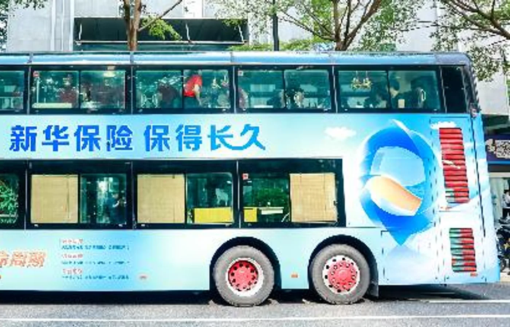
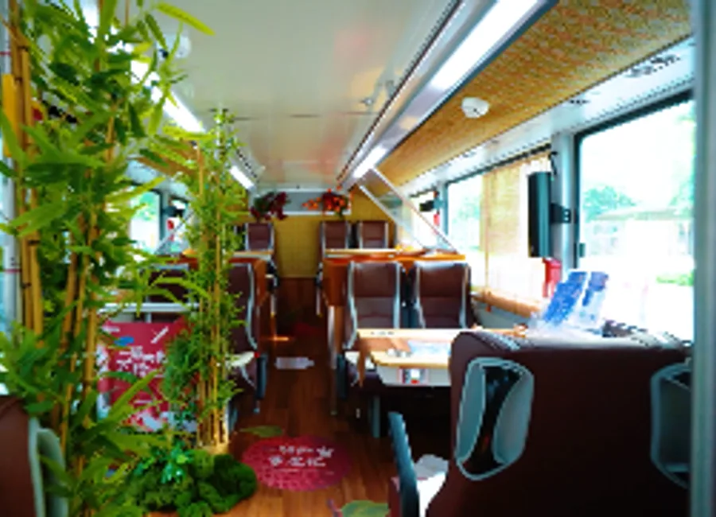
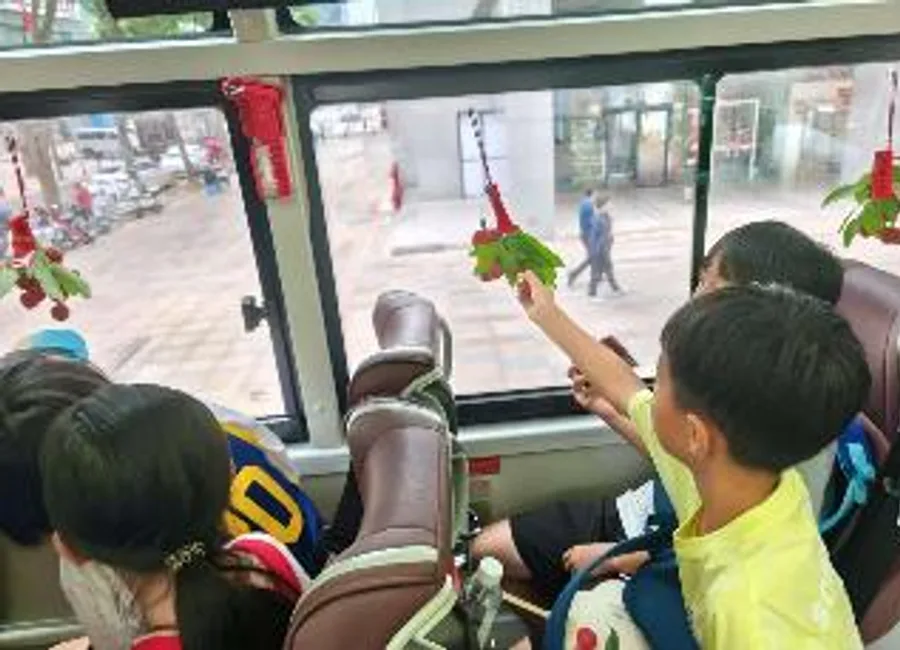

让移动媒介成为一场可参与、可记住的体验。
将城市观光路线、车内剧情、客户互动与线上传播串成完整旅程，并以定制纪念照推动活动后的二次触达。
- 设计唐风 NPC、密函与荔枝品鉴环节
- 统筹路线、场次、现场和供应商
- 组织媒体发布与客户内容回流
我的角色 项目统筹 · 体验策划 · 内容传播 · 媒体与供应商执行
十四天 / 十四场
将城市观光路线、车内剧情、客户互动与线上传播串成完整旅程，并以定制纪念照推动活动后的二次触达。


两周完成 14 场客户体验，收到近 200 份客户照片；凤凰网单篇阅读约 63.1 万，把线下体验继续带回线上。